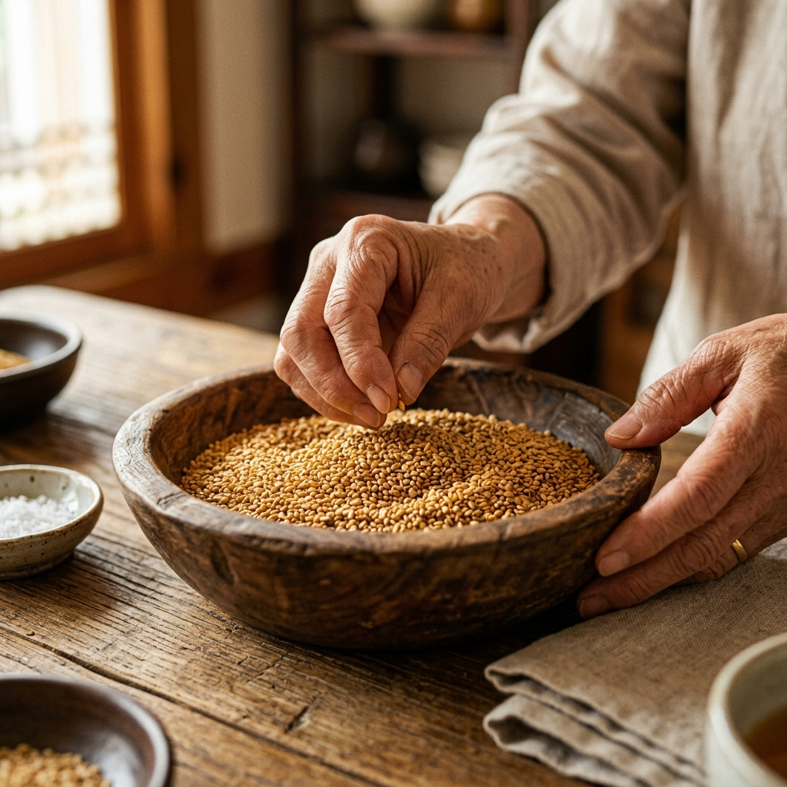
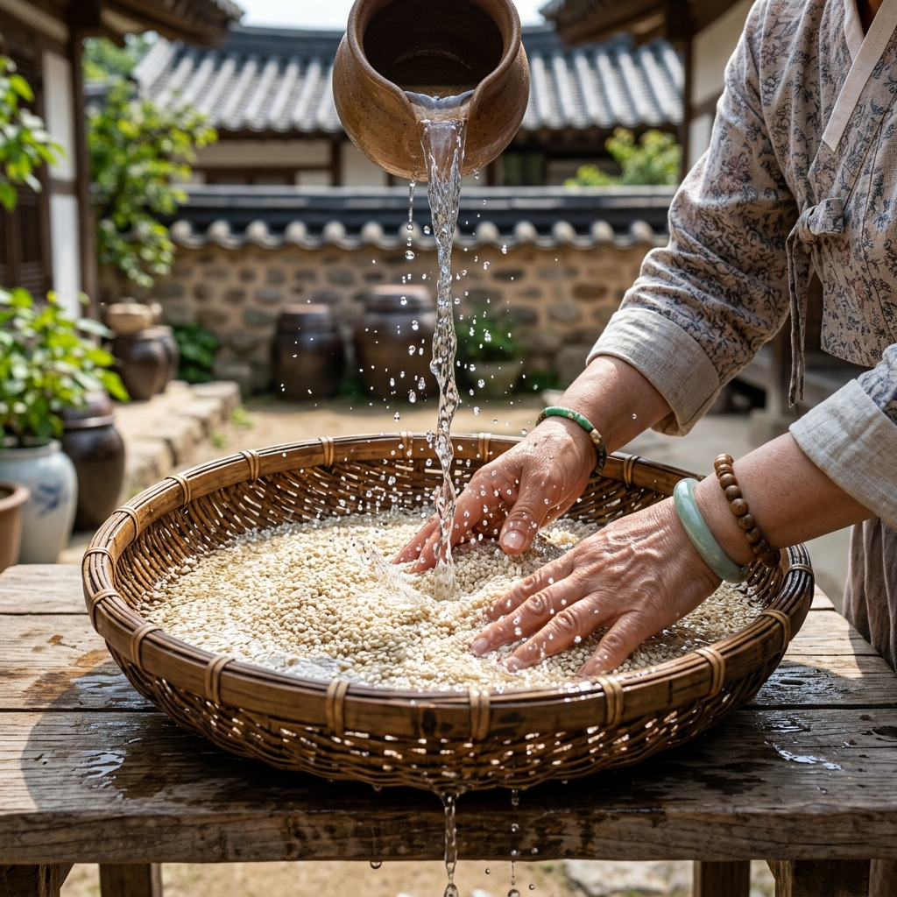
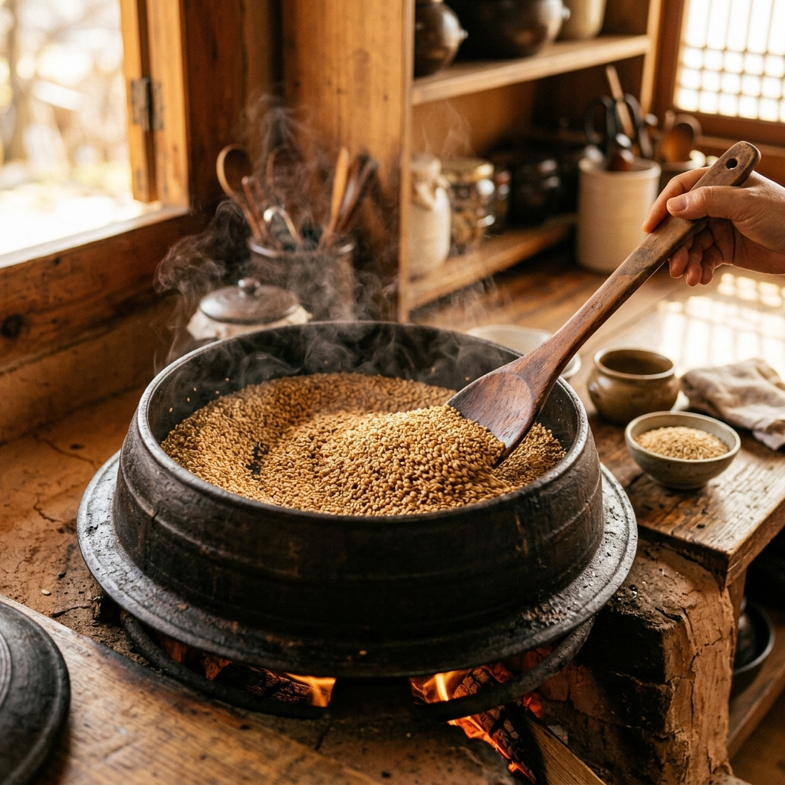
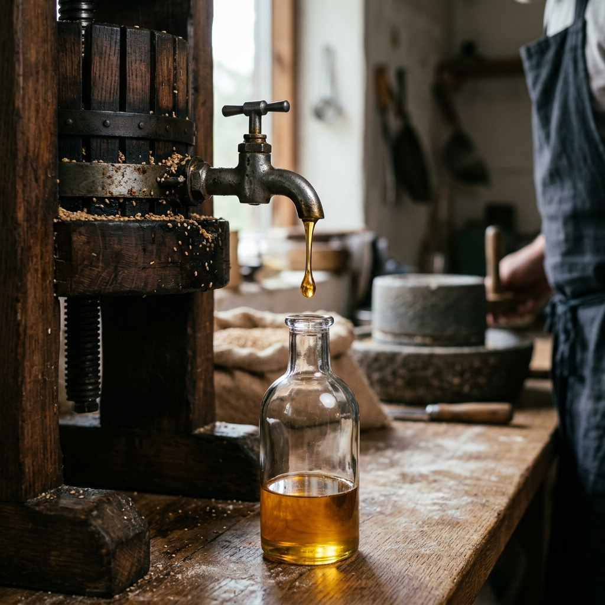
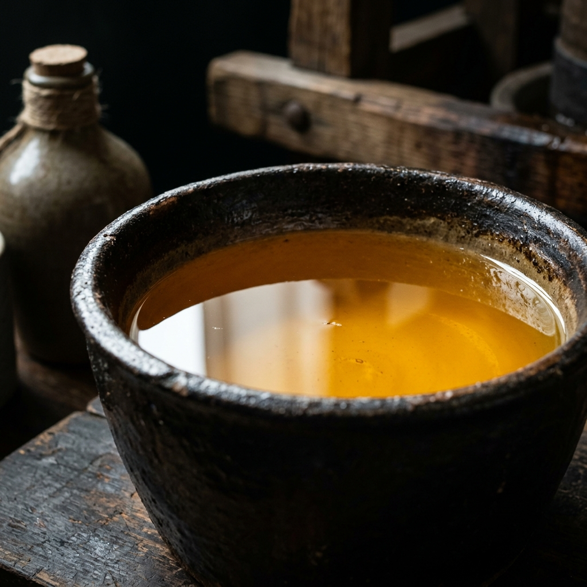

전통 방식을 고집하며
안전하고 깨끗하게 만듭니다

영월에서 수확한 100% 국산 농산물 중에서도
알이 굵고 속이 꽉 찬 최상급 참깨와 들깨만을
직접 눈으로 보고 만져보며 깐깐하게 선별합니다.
좋은 기름은 좋은 원재료에서 시작됩니다. 알이 작거나 상처난 원료가 하나라도 섞이면 전체의 향과 맛을 떨어뜨릴 수 있기 때문에 최상급 원재료만 엄선합니다.

흐르는 맑은 물에 3회 이상 꼼꼼히 세척하여
먼지와 미세 흙을 완벽히 제거합니다.
위생은 타협할 수 없는 가장 기본적인 약속입니다.
농산물 특성상 세척이 불충분하면 미세한 흙먼지가 남아 텁텁한 맛을 낼 수 있습니다. 맑은 물로 꼼꼼히 세척하여 맑은 고소함만 남깁니다.

태우지 않는 은은한 저온에서 천천히 볶아내어
벤조피렌 위험을 차단하고
맑은 색상과 부드러운 고소함을 극대화합니다.
고온에서 강하게 볶으면 양은 늘어나지만 탄내가 나고 벤조피렌 유해물질 위험이 생깁니다. 건강과 참된 향을 위해 저온 로스팅만을 고집합니다.

깨끗한 전통 압착기에서 단 한 번만 착유합니다.
재착유 없이 진하고 깨끗한 엑기스만을 한 병 한 병 정성껏 짜냅니다.
여러 번 짜면 생산량은 늘릴 수 있지만 맛과 향이 현저히 떨어집니다. 영월고향방앗간은 양보단 질을 선택하여 단 한 번의 정직한 착유만을 고집합니다.

갓 짜낸 기름은 화학 필터로 강제로 거르지 않습니다.
서늘한 곳에서 72시간 동안 가만히 두어 자연스럽게 불순물을
가라앉힙니다.
기다림이 만들어내는 투명함입니다.
인공적인 필터링은 본연의 풍미를 깎아내릴 수 있습니다. 오랜 시간이 걸리더라도 자연 침전 방식을 거쳐야 진정으로 맑고 깊은 기름이 완성됩니다.
한 병의 기름이 완성되기까지
원재료를 고르는 시간.
깨를 씻는 시간.
천천히 볶는 시간.
정직하게 짜내는 시간.
기다림의 시간만큼 깊은 향이 완성됩니다.